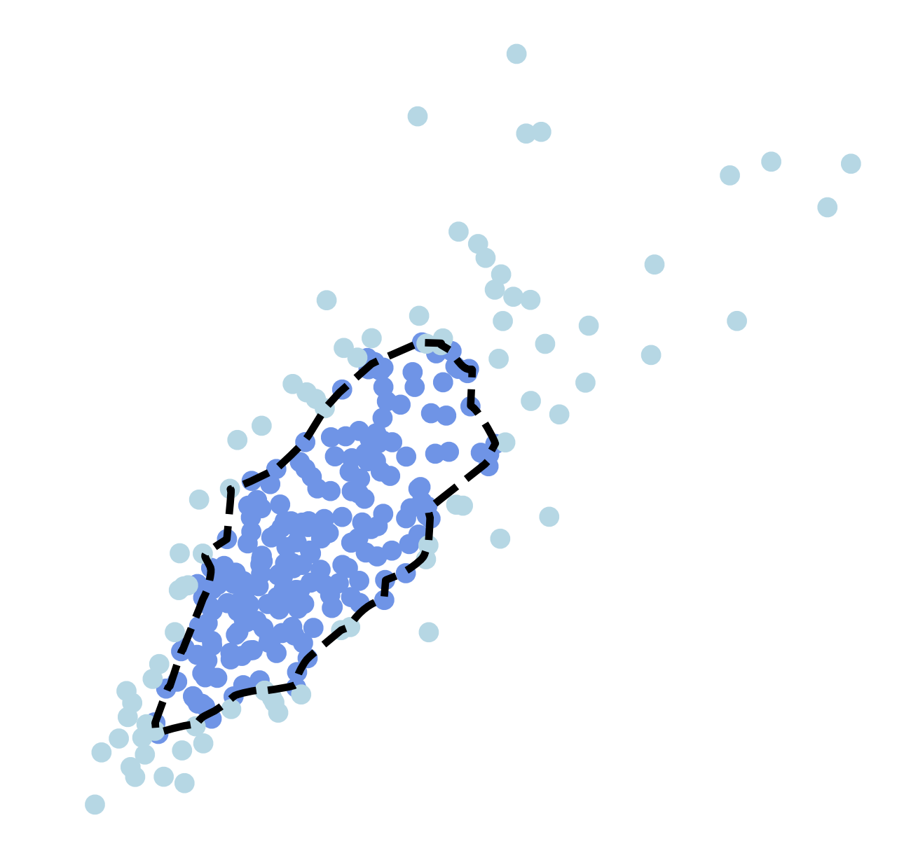
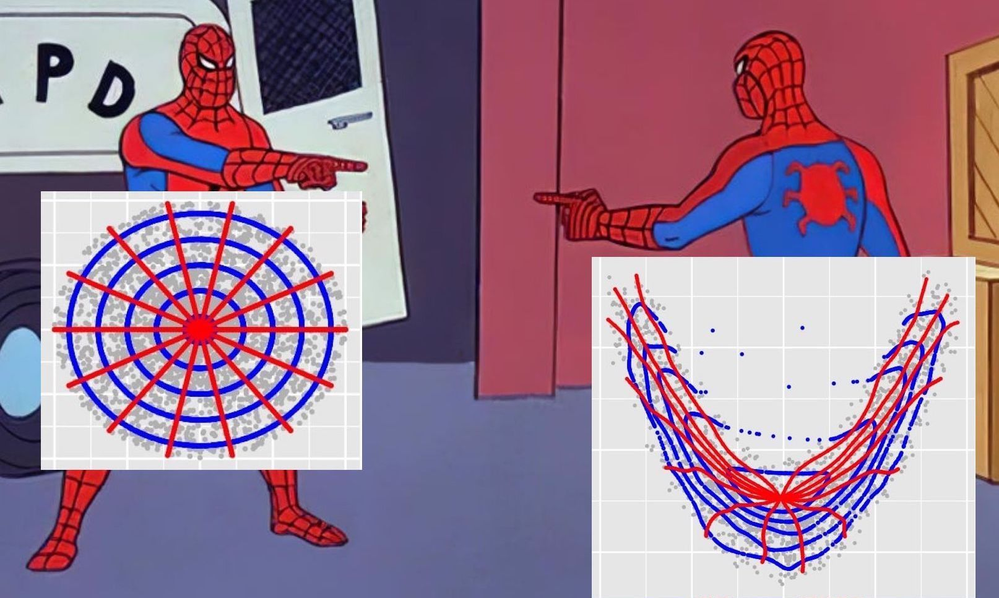
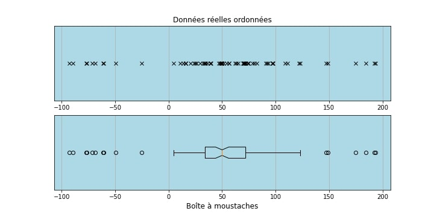
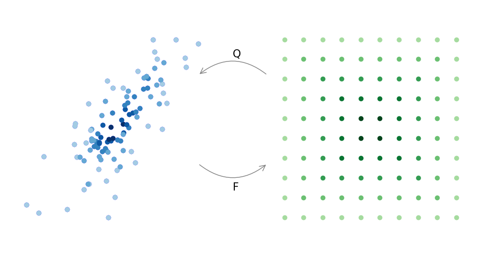
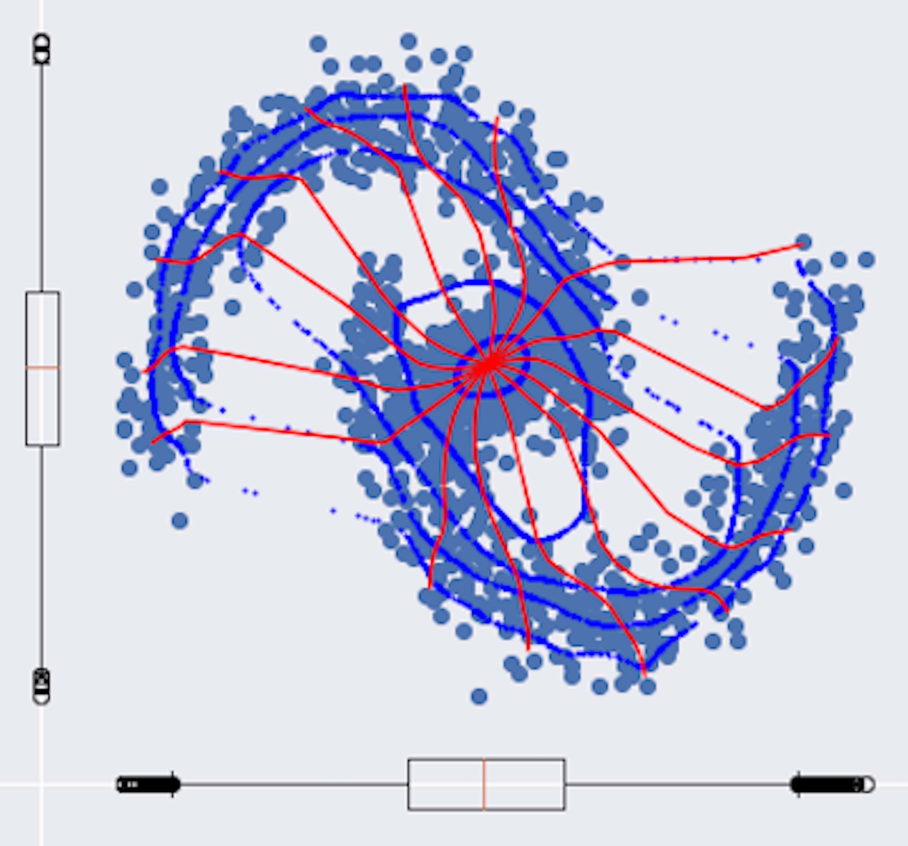
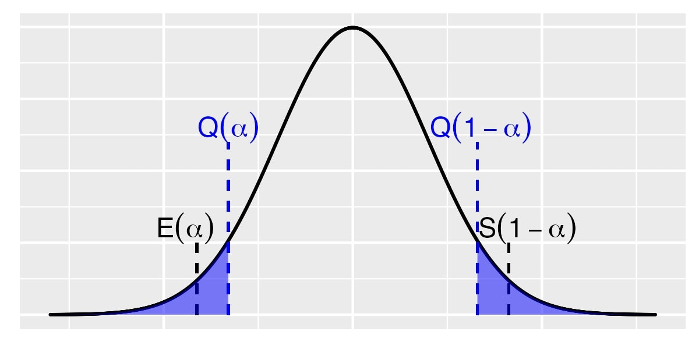
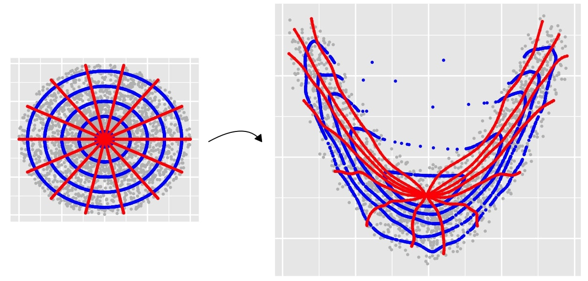
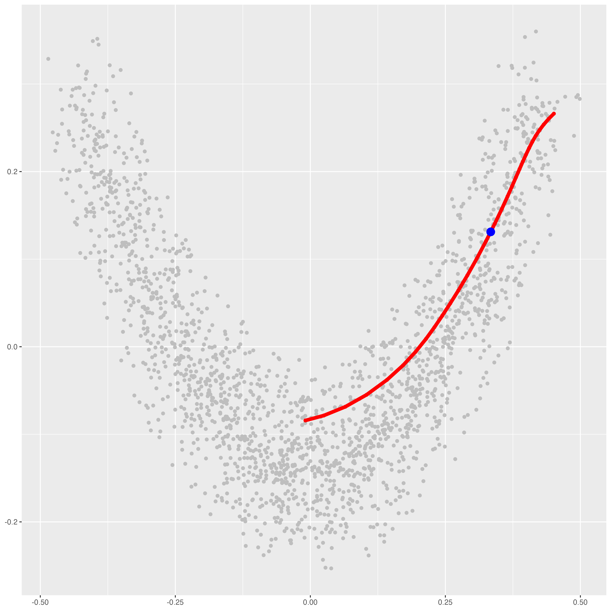

About me
I am currently a postdoc researcher at
ENS Paris, Center for Sciences of Data
supervised by Kimia Nadjahi and Claire Boyer.
I did my thesis at the Institut de Mathématiques de Bordeaux (IMB) under the supervision of Jérémie Bigot and Bernard Bercu.
The manuscript is available here.
In addition to my research activities, I have been lecturing to mathematics students at the university of Bordeaux.
Besides, I have been involved in both the Institute's equity mission and environmental mission and I participated in outreach activities with middle and high school students.
Research

My main research topic is about multivariate quantiles defined through the lens of measure transportation. A resume of my PhD project is available here.
The following list of publications is also available on my scholar account.
Publications.
- Thurin, G., Nadjahi K., Boyer C., (2025) Optimal Transport-based Conformal Prediction,
International Conference on Machine Learning (ICML),
arxiv,
hal,
[codes on github].
- Thurin, G., (2025) Monge-Kantorovich quantiles and ranks for image data , 10th International Conference on
Scale Space and Variational Methods in Computer Vision (SSVM), arxiv, hal.
- Bercu, B., Bigot, J., & Thurin, G. (2024) Monge-Kantorovich superquantiles and
expected shortfalls with applications to
multivariate risk measurements, Electronic Journal of Statistics, 18 (2) 3461 - 3496,
arxiv, [codes on github].
- Bercu, B., Bigot, J., & Thurin, G. (2023) Stochastic optimal transport in Banach Spaces for regularized estimation of multivariate quantiles,
SIAM Journal on Mathematics of Data Science,
arxiv,
[codes on github].
Preprints.
- Thurin, G., Boyer C., Nadjahi K.. (2026) Convergence Rates for Distribution Matching with Sliced Optimal Transport,
HAL, [codes on github].
- Bercu, B., Bigot, J., & Thurin, G. (2024) Regularized estimation of Monge-Kantorovich quantiles for spherical data,
arxiv, [codes on github].
Codes and tutorials

Codes.
- Codes associated with a specific paper are available in the Research section.
- Functions for using center-outward quantiles through entropy regularization. [View python notebook].
Tutorials.
- Understanding center-outward quantiles. [Here].
- Our center-outward superquantiles and expected shortfalls. [Here].
Contact
📧 gthurin@mail.di.ens.fr
Monge-Kantorovich quantiles
Basic ideas
The quantile function is a fundamental tool in statistics to describe a univariate probability distribution. It is encountered on a daily basis, at the very least for descriptive analysis with the traditional boxplot.

At its core lies the left-to-right ordering of the real line and the associated order statistics. Because there is no unique satisfactory way to order vectors within a point cloud, there is no consensus about a definition of multivariate quantiles.
One proposal relies on ideas from measure transportation, with the following basic idea : to simplify the problem by reducing to an easy setting.
To do so, one applies a monotonic transformation F to the data that transports towards a reference distribution. Then, the image by F of a data point determines its rank, as exemplified in the next figure. You can click on it to zoom in.

Naturally, Q, the inverse of F, serves as a multivariate quantile function, mapping reference regions to quantile regions with given probability.
A main property is the adaptivity to the shape of a point cloud, giving rise to a meaningful multivariate boxplot even for highly non convex data.

This is illustrated on this last figure, where I took a reference distribution on the unit ball. The interested reader can click on it to read codes, or continue the lecture with either this paper for definitions in full generality, or this one for an overview of applications.
Multivariate superquantiles
''The superquantile function [...] is as fundamental to a random variable
as the distribution and quantile functions'', Rockafellar and Royset, in this paper
This assertion is partially motivated by two facts:
- the univariate distribution, quantile and superquantile functions are uniquely determined one to another,
- and the pointwise convergence of these functions metrizes convergence in distribution.
By the way, these properties hold for our proposal of multivariate extension, under continuity assumptions. This note briefly introduces our definitions, based on Monge-Kantorovich quantiles.
Basic ideas
Let us briefly recall univariate definitions. Superquantiles target upper probability tails, while expected shortfalls target lower tails. They are defined as integrated quantile functions beyond (resp. above) a quantile level, as exemplified in the following figure.

Quite naturally, a multivariate quantile function calls for associated superquantiles and expected shortfalls.
The Monge-Kantorovich quantile function Q is defined as a push-forward mapping from a reference distribution to the data. If ones fixes the reference to be the spherical uniform distribution, a kind of uniform on the unit ball, Q is also called the center-outward quantile function. This concept is illustrated in the next picture.

There, one can view the right-hand picture as a curvilinear polar coordinate system adapted to the shape of a distribution, which is broken down into two components :
- A quantile contour (in blue) gathers vectors within a point cloud having the same depth, in all possible directions.
- A sign curve (in red) gathers vectors having the same directional information, with all possible depth values.

Each quantile vector Q(u) (in blue on the right) belongs to a single sign curve (in red). The latter can be thought of as a curvilinear univariate distribution, from the center to the outward. With this viewpoint, we suggest to integrate along this sign curve, either in the peripheral part for superquantiles S(u) , or in the central part for expected shortfalls E(u)
The image by E and S of radius and circles in the unit ball are represented hereafter, to illlustrate that E (resp. S ) characterizes central (resp. peripheral) areas of point clouds.

Properties
These functions uniquely characterize multivariate probability measures and their convergence in distribution, under continuity assumptions. To alleviate these simplifying assumptions, a possible path is to extend arguments from Rockafellar and Royset's work. Indeed, they rely on convex analysis theory, which is also preponderant in optimal transport theory and our definition for Q .
Other perspectives
Our paper also includes additional results, a discussion on the choice of the reference distribution and applications in risk analysis. The properties of the multivariate Value-at-Risk and Conditional-Value-at-Risk that we propose are to be investigated. Also, more clever estimators than our Riemann sums might be constructed.
Finally, a natural perspective for further work is to extend other univariate applications, such as superquantile regression or learning with a superquantile loss.
{kind=link}